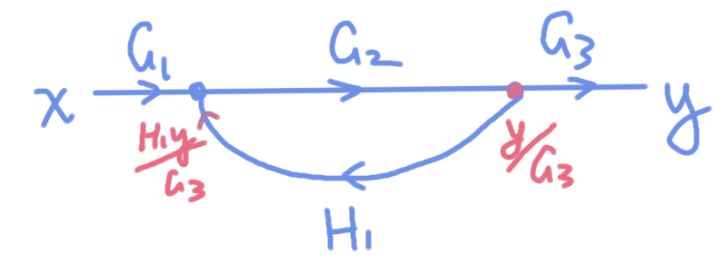
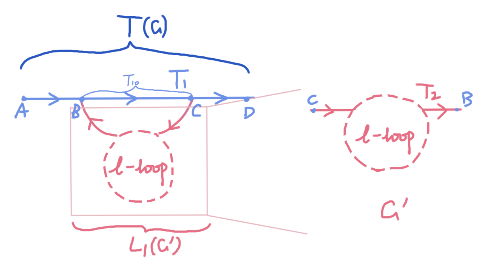

Mason增益公式的递归证明
摘要
Mason增益公式是由信号流图求系统传递函数的便捷公式，原论文链接https://dspace.mit.edu/bitstream/handle/1721.1/4778/RLE-TR-303-15342712.pdf;jsessionid=62D98E44F7E6C4819522027D1E3C3289?sequence=1
他有多好用就不用多说了，但是原论文给出的证明过于简洁与经验化，所以我给出一种归纳证明的方法。
命题
在信号流图G中，系统的传递函数为
$$T=\frac{\sum_k T_k\Delta_k}{\Delta}$$
$$\Delta=1-\sum L_i+\sum_{L_i\cap L_j=\emptyset} L_i L_j-\sum_{L_i\cap L_j\cap L_k=\emptyset} L_iL_jL_k+...$$
其中，求和项为所有前向通路（起点为x，终点为y，每个节点至多经过一次）。
$T_k$是第k条前向通路的增益（所有传递函数的乘积）
为了方便，将$\Delta$称作系统行列式。在$\Delta$的计算过程中，$L_i$为回路的增益函数，$\sum L_i$为对着图内全部回路增益函数求和，后面的求和项为对着所有不相交的回路求和
$\Delta_k$为图G去掉第k条前向通路后的子图的系统行列式
引理
1.一类信号流图的计算

我们用一般方法计算一下这张图的传递函数。首先最右侧红色节点输出为$Y/G_3$，左侧蓝色节点总输入为$G_1X+H_1Y/G_3$，那么在最右侧红点处建立等式关系
$$G_2(G_1X+H_1Y/G_3)=Y/G_3$$
解得系统传递函数
$$T=\frac{Y}{X}=\frac{G_1G_2G_3}{1-H_1G_2}$$
若记前向通路增益$T_1=G_1G_2G_3$，环路增益$L_1=H_1G_2$，则该图的传递函数为
$$\boxed{T=\frac{T_1}{1-L_1}}$$
这个公式描述的是将某段已知增益的信号图$L_1$两端弯折附加在另一段向前信号图$T_1$后系统函数的变化
2.系统行列式的递推关系
设信号流图G有系统行列式$\Delta(G)$，给G添加一个新环路P后，G+P的系统行列式为
$$\Delta(G\cup P)=\Delta(G)-P\Delta(G\backslash P)$$
证明：由系统行列式的计算公式，添加新环路后新增的求和项为
$$-P+\sum_{P\cap L_i=\emptyset}PL_i-\sum_{P\cap L_i\cap L_j=\emptyset}PL_iL_j+...$$
提出公因数P后恰好为
$$-P\Delta(G\backslash P)$$
命题证明
因为不同前向通路之间具有线性叠加性，所以先考虑单条前向通路的情况，此时希望证明
$$T=\frac{T_1\Delta(G\backslash T_1)}{\Delta(G)}$$
对信号流图环路数$l$使用数学归纳法，当$l=0$时$\Delta=\Delta_1=1$，$T=T_1$，系统传递函数即为前向通路增益，命题成立
假设命题对$l$个环路成立，下面证明对$l+1$个环路的图G仍成立。对于仅有一条前向通路$T_1$的图，必定存在某个环路与$T_1$相交，相交模式可以由引理1刻画，如图所示

图中ABCD为节点，有向单线增益分别为$ABCD=T_1,BC=T_{10},CB=T_2$；两点之间的有效传递函数为$AD=T,CB=L_1$。那么由引理1可得系统的传递函数为
$$T=\frac{T_1}{1-L_1T_{10}}$$
将$l$环的Mason公式代入
$$L_1=\frac{T_2\Delta(G'\backslash T_2)}{\Delta(G')}$$
得
$$T=\frac{T_1}{1-\frac{T_{10}T_2\Delta(G'\backslash T_2)}{\Delta(G')}}=\frac{T_1\Delta(G')}{\Delta(G')-T_{10}T_2\Delta(G'\backslash T_2)}$$
注意到$G'$与$G\backslash T_1$有相同的环路结构，故$T_1\Delta(G')=T_1\Delta(G\backslash T_1)$，而分母由引理2可得即为$\Delta(G'\cup T_{10})=\Delta(G)$，故有
$$T=\frac{T_1\Delta(G\backslash T_1)}{\Delta(G)}$$
最后由不同前向通路之间的线性性可得原公式
$$T=\frac{\sum_k T_k\Delta_k}{\Delta}$$
证毕
应用举例
如图[^1]，求系统传递函数

我们以最中间的前向通路为例，体会一下递归的过程。图中的三个蓝色回路即为原图所有回路，且均与我们考虑的前向通路相交

利用Mason公式可得出中间直路上对应的传递函数部分为
$$T_{mid}=\frac{G_1G_2G_3G_4}{1-G_2H_2+G_1G_2G_3G_4H_1+G_1G_2G_4H_1}$$
下面我们来试试将每个环路粘上去，对于环路$G_2H_2$，粘上直路后，根据引理1传递函数变为
$$T_{mid-1}=\frac{G_1G_2G_3G_4}{1-G_2H_2}$$
接下来再粘上$-G_1G_2G_3G_4H_1$，此时将$G_2H_2$的环路段等效为传递函数为$G_2/(1-G_2H_2)$的单线段，传递函数变为
$$T_{mid-2}=T_{mid-1}\times\frac{1}{1+G_1\frac{G_2}{1-G_2H_2}G_3G_4H_1}=\frac{G_1G_2G_3G_4}{1-G_2H_2+G_1G_2G_3G_4H_1}$$
从这里我们也可以看出为什么相交的环路就不会贡献系统行列式的高次交叉项，这是因为交叉部分的等效处理会将一个环除掉，自然就无法产生高次交叉项。那么对于环$-G_1G_2G_4H_1$也是一样，前两个环的等效会使得他多除前两个环，也即
$$\begin{align*} T_{mid}&=T_{mid-2}\times\frac{1}{1+G_1G_2G_4H_1/(1-G_2H_2+G_1G_2G_3G_4H_1)} \\&=\frac{G_1G_2G_3G_4}{1-G_2H_2+G_1G_2G_3G_4H_1+G_1G_2G_4H_1} \end{align*}$$
其他前向通路也同理
[^1]: https://frp.imatever.com:7002/hexo/posts/2025-07-10-%E8%80%83%E7%A0%94%E6%8E%A7%E5%88%B6%EF%BC%88%E4%B8%80%EF%BC%89%E7%BA%BF%E6%80%A7%E7%B3%BB%E7%BB%9F%E5%BB%BA%E6%A8%A1/#Mason-%E5%A2%9E%E7%9B%8A%E5%85%AC%E5%BC%8F